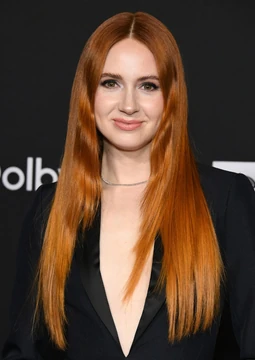

Biografía
Karen Sheila Gillan es una actriz y modelo británica.
Obtuvo reconocimiento por su trabajo en el cine y la televisión británicas, en particular por interpretar a Amy Pond, compañera principal del Undécimo Doctor en la serie de ciencia ficción Doctor Who (2010-2013), por la que recibió varios premios y nominaciones.
Posteriormente, Karen alcanzó el estrellato internacional por interpretar a Nebula en las películas de superhéroes del Universo cinematográfico de Marvel; Guardianes de la Galaxia (2014), Guardianes de la Galaxia vol. 2 (2017), Avengers: Infinity War (2018) y Avengers: Endgame (2019),
que se convirtió en la película más taquillera de todos los tiempos, desde julio de 2019 hasta marzo de 2021. Está lista para repetir el papel en las próximas películas: Thor: Love and Thunder (2022) y Guardianes de la Galaxia Vol. 3 (2023).
Gillan ha mantenido la prominencia de la corriente principal con su interpretación de Ruby Roundhouse en las películas de acción; Jumanji: Welcome to the Jungle (2017) y Jumanji: The Next Level (2019), las cuales alcanzaron el éxito comercial.
En el escenario, apareció en la obra Inadmissible Evidence de John Osborne (2011) e hizo su debut en Broadway en la obra Time to Act (2013). Gillan obtuvo elogios de la crítica por su participación como escritora, directora y cabeza de cartel en la película dramática; The Party's Just Beginning (2018).
Los galardones de Karen incluyen un premio Empire, un National Television Awards, un premio Teen Choice y nominaciones para un premio BAFTA Scotland y un premio Saturn.
Además de actuar, también se ha destacado por su imagen pública y activismo, en particular hacia la prevención del suicidio.
